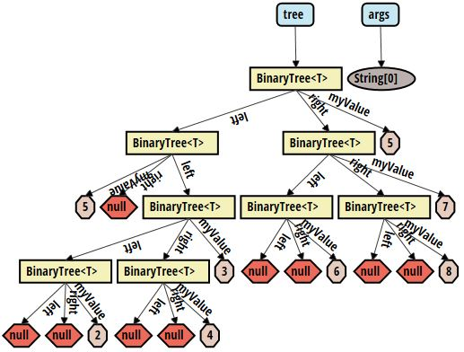
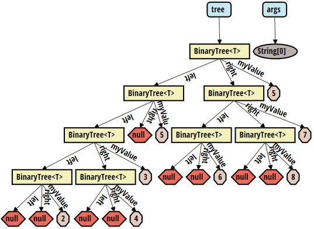
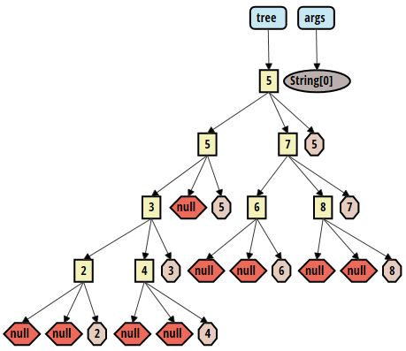
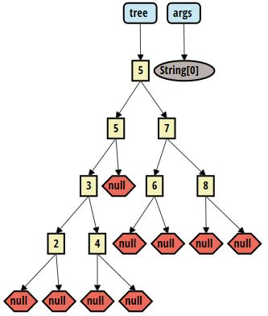
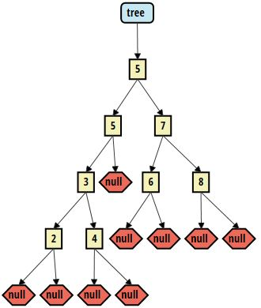

Check out the video version of this tutorial below!
Introduction
This tutorial will guide you through developing a very simple binary tree with the tool and show you the necessary steps to configure the tool as desired. Look at the manual to get a more general introduction to the tool, or for specific questions. If you haven't installed the tool yet, take a look at the installation description. If you don't know how to open the tool, find out how to use it, and then come back to this tutorial.
Code
We will be developing a very simple binary tree class. This class will support the insert feature, but not remove or find. This tutorial doesn't aim to show you how to develop a binary tree, but how to use the tool.
Create a class BinaryTree in a package binarytree with the following code:
package binarytree;
class BinaryTree<T extends Comparable<T>> {
T myValue;
BinaryTree<T> left, right;
BinaryTree(T value) {
this.myValue = value;
}
void insert(T value) {
if (value.compareTo(myValue) <= 0) {
if (left == null) {
left = new BinaryTree<>(value);
} else {
left.insert(value);
}
} else {
if (right == null) {
right = new BinaryTree<>(value);
} else {
right.insert(value);
}
}
}
}
Additionally, create a Main class in the same package with the following code:
package binarytree;
class Main {
public static void main(String[] args) {
BinaryTree<Integer> tree = new BinaryTree<>(5);
tree.insert(5);
tree.insert(3);
tree.insert(2);
tree.insert(4);
tree.insert(7);
tree.insert(6);
tree.insert(8);
System.out.println(tree);
}
}
We now have the code to debug. Add a breakpoint to the last line in the Main.main method. That way, the entire tree will be shown in the tool. For this tutorial, this is sufficient. Otherwise, of course breakpoints are supported at any place in the code.
Debugging
Let's now debug the program. Before adding any configuration, the tool will show a graph which looks similar in style to the one below:
One can see multiple issues with this graph. For one, the left and right fields are not ordered as desired. Secondly, the text contained in the tree nodes is not very informative. Lastly, the tree doesn't look very tree-like: We would like not to see the myValue field in the graph. Let's take care of these issues step-by-step.
Field order
First, let's take care of making sure the left and right fields appear in the correct order in the graph. For this, we need to add an ordering constraint. Refer to the manual on how to add a constraint. Add the following constraint:
{
"query": "binarytree/BinaryTree<T>",
"quantifier": "all",
"order": "(left.recurse(*))<(right.recurse(*))"
}
After applying this constraint, the order of the fields is correct and the graph looks like below. We can see that now all left subtrees are drawn to the left of a right subtree. With the left.recurse(*)<right.recurse(*) order, we ensure that the entire left subtree is always drawn to the left of the entire right subtree of a node. Refer to the manual for more details.
Value strings
Secondly, let's make sure the tree looks a bit informative. For this, we add a value string format. We want to make sure that a BinaryTree instance with a field myValue=5 is displayed in the graph as follows: 5. Refer to the manual on how to add a value string format. Add the following format:
{
"query": "binarytree/BinaryTree<T>",
"quantifier": "all",
"format": "{myValue}"
}
After applying the format, the information contained in the nodes looks like below. We can now clearly see the meaning of each node, and understanding the correct order of the tree becomes easier. The field names are hidden out of convenience, as they are not important for these steps anymore. They can always be shown again using the checkbox or by hovering above a value.
Blacklisting
Lastly, we want to remove the myValue field and the args variable from the graph. As we have the value of the myValue field visible directly in the nodes, it contains no additional information and only takes up screen space. It also makes the graph look less tree-like. Therefore, we add a blacklist rule. Refer to the manual on how to add a blacklist rule. Then add the following rule:
{
"query": "binarytree/BinaryTree<T>",
"quantifier": "all",
"comparison": "myValue==primitive"
}
The above rule removes the myValue field from the graph. However, it does so only when it is a primitive value. Whenever it is not a primitive type, it is still going to be shown. This is useful, as non-primitive types typically have fields and therefore contain more information than can be shown in a string only. As we can see in the image below, the graph now looks as we would imagine a binary tree to look.
To remove the args variable from the graph, we need to add one more blacklist rule. Add the following rule:
{
"query": "args",
"quantifier": "all",
"comparison": "this"
}
args as the query allows us to refer to the variable (and its value). By using this as the comparison, we refer to the results from the query and blacklist them. Finally, the graph looks as in the image below, without any visual clutter.
